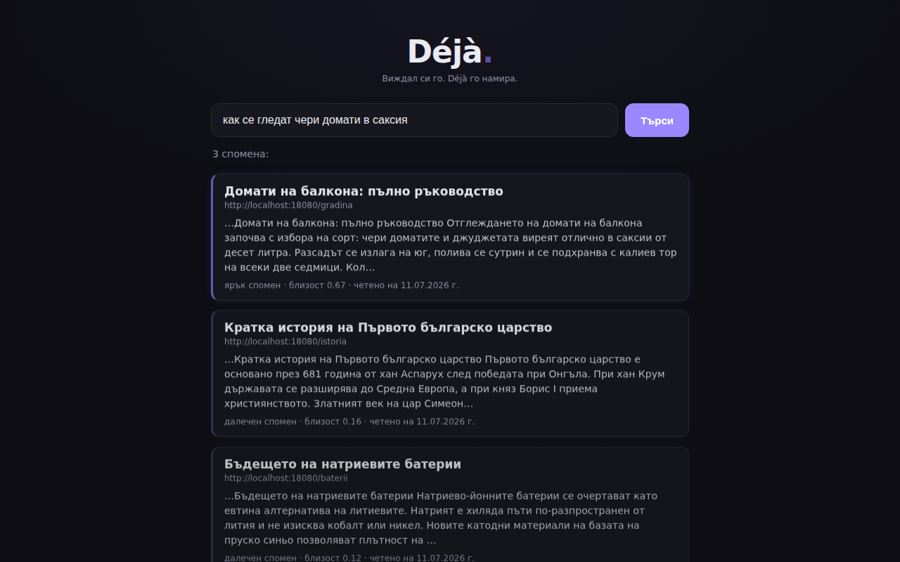

Your second brain, which remembers not where you've been, but what you've learned.
Stop wasting time endlessly hunting for articles from months ago. Déjà understands the meaning of what you've read and finds it in your own words.
100% local. 100% private.
Add to Chrome — freeRuns entirely on your device. What you read never leaves the browser — ever.*
* The only exception: the AI model is downloaded once from Hugging Face (only your IP is visible, not what you read). Details.

What is Déjà?
Déjà is a free extension for Chrome (and Brave, Edge, any Chromium browser) that turns your browser history into a search engine by meaning. As you read, Déjà indexes the text of pages locally and then finds them by what you remember — in plain language, not by an exact title or URL. All analysis happens on your device: no server, no telemetry, no cloud. It works in 50+ languages — you ask in English even if the article was in another language.
Your browser history is a “black hole”.
Most people have hundreds of saved bookmarks and thousands of pages in their history that they never find again. Why?
Traditional search is limited
You have to remember the exact title or URL.
The meaning gets lost
You remember reading about “new battery technology”, but you don't recall whether it was on Wired, Medium or a personal blog.
The result
You know the information is out there somewhere, but you search for it again on Google from scratch. A validated pain: “I saved 500 articles and I can't find a thing.”
Search the way you think.
With Déjà you don't need to remember keywords. Just type what you recall, in plain language.
You type: “article about a cheap alternative to lithium batteries”
The words “cheap” or “alternative” appear nowhere in the text — but Déjà understands the context. It works in 50+ languages: search in English even if the article was in another language.
Smart, but discreet.
As you browse, the extension works quietly in the background:
Extract
Déjà extracts the clean text from the page.
Vectorise
An AI model turns the text into “numeric fingerprints of meaning” (vectors).
Local storage
These fingerprints are kept only in your browser.
Semantic search
Your query is compared with the fingerprints mathematically — the closest meaning wins.
The trump card: 100% private. 0% cloud.
In an era of mass tracking and scandals like Honey, Déjà is your fortress.
Offline AI
The model is downloaded once. After that, everything works offline.
No servers
Nothing you read leaves your device. Ever.
A GDPR dream
You own your data 100%. No telemetry, no cloud storage.
Smart filters
Login, mail, chat, banking and payment pages are skipped automatically (a built-in list by address). You can add your own too.
You hold the key to your memory.
One-click pause
Stop indexing instantly.
Automatic forgetting
Set data to be deleted after N months.
Clear memory
Full deletion of the local database with one button.
Your own list
Addresses that Déjà will never remember.
Frequently asked questions
How do I search my history by meaning?
You open Déjà and type whatever you remember in plain words — e.g. “article about a cheap alternative to lithium batteries”. Déjà compares the query with what you've read by meaning and returns the closest page, even if those exact words don't appear in it.
Does Déjà send my data to the cloud?
No. All the text, the index and the search live only in your browser. No server, no telemetry. The AI model is downloaded once and then works offline.
Is it free, and which browsers does it work on?
Completely free. It works on Chrome, Brave, Edge and every Chromium-based browser.
Which languages does the search work in?
In 50+ languages. You can search in English for an article you read in another language — Déjà understands the meaning across languages.
Stop searching. Start finding.
Join the people who are no longer afraid to close a tab in their browser.
Add Déjà to Chrome — freeSupports Chrome, Brave, Edge and other Chromium-based browsers.